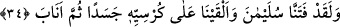
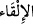
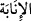

34. Andolsun biz Süleyman’ı imtihan ettik. Tahtının üstüne bir cesed bırakıverdik,
sonra o, yine eski hâline döndü.
“Andolsun biz Süleyman’ı” hükümdarlığı ile “imtihan ettik.”
Fitne (
), sınamak ve denemek; ilkâ (
) ise atmak demektir. Kürsî de üzerine
oturulan şeydir. Burada Süleyman’ın (a.s.) meşhur tahtı kasdedilmektedir ki Sebe’
sûresinde anlatılmıştı.
“Tahtının üstüne bir cesed bırakıverdik,” Cesed (
) kelimesiyle ilgili olarak el-
Müfredât’ta şöyle der: Cesed, cisim demek olmakla birlikte daha özel anlamı bulunan
bir kelimedir.
Halîl de der ki: Cesed kelimesi, yeryüzü ve yeryüzü dışında yaşayan yaratıklardan
insan dışındakiler için kullanılmaz. Ayrıca cesed, renkli şeyler için kullanılırken cism
lafzı, su ve hava gibi belli bir rengi olmayan şeyler için de kullanılır.
Envâru’l-meşârık’ta der ki: Cesed ile beden arasındaki fark, birincisinin hem ruh
sâhibi (zî-rûh) olan hem de olmayan varlıklar ve bunların başları, kol, bacak vs.
organları için kullanılmasına mukabil, bedenin rûh taşıyanlara özgü olması ve baş ve
diğer organları kapsamamasıdır. Kelimelerdeki bu özellik sebebiyledir ki ulemâ
arasında tekrar diriltilme hadisesi, “haşru’l-ecsâd” tâbiri ile yaygınlaşmıştır. Yâni haşr
lâfzı, rûh taşıyanlara özgü beden lâfzına değil de hem rûh taşıyan ve hem de ruh
taşımayan varlıkları kapsayan (cesed’in çoğulu) “ecsâd” lâfzına izâfe edilmiştir. Çünkü
Zemahşerî’nin, el-Fâik fî garîbi’l-Hadîs’inde; İmam Halîl’in de Kitâbü’l-ayn’ında
ifâde ettiği gibi, haşrın baş ve organlara şâmil olmadığını nazar-ı itibara aldığımız
bedene izâfe edilmesi durumunda, varlığın bütün organlarıyla yâni olduğu gibi
diriltilmesine halel getirilmiş olurdu. Cesed lâfzının, ihtiyaçtan yâni haşredilecek
olandan fazlasını kapsadığı şeklindeki bir düşünce ise haşrın izâfe edilmesi karînesiyle
bertaraf edilmiş olmaktadır.
Âyetteki cesedden maksad, biraz sonra geleceği gibi ruhsuz kalıptır.
“Sonra o, yine eski hâline döndü.” Yönelme anlamına gelen inâbe (
) kelimesi,
Allah Teâlâ’ya dönmek anlamındadır.
Rivâyete göre Süleyman’ın (a.s.) üçyüz hanımı, yedi yüz de câriyesi vardı.
Kendisinde yüz erkek gücü vardı. Allah’ın peygamberleri böyledir. Bunlara,
ümmetlerine verilmeyen bir güç verilmiştir. Ekmel velîlerin durumu da aynı olup
bunların da peygamberlerin gücü kadar olmasa bile diğer ferdlerden daha fazla gücü
vardır. İşte, Süleyman (a.s.) bir gün: “Bu gece, yetmiş kadınla birden cinsî münâsebette
bulunacağım ve herbiri Allah yolunda savaşan birer aslan doğuracak!” demiş. Doksan,
doksan dokuz ya da yüz kadınla birlikte olacağını söylediği de rivâyet edilir. Fakat